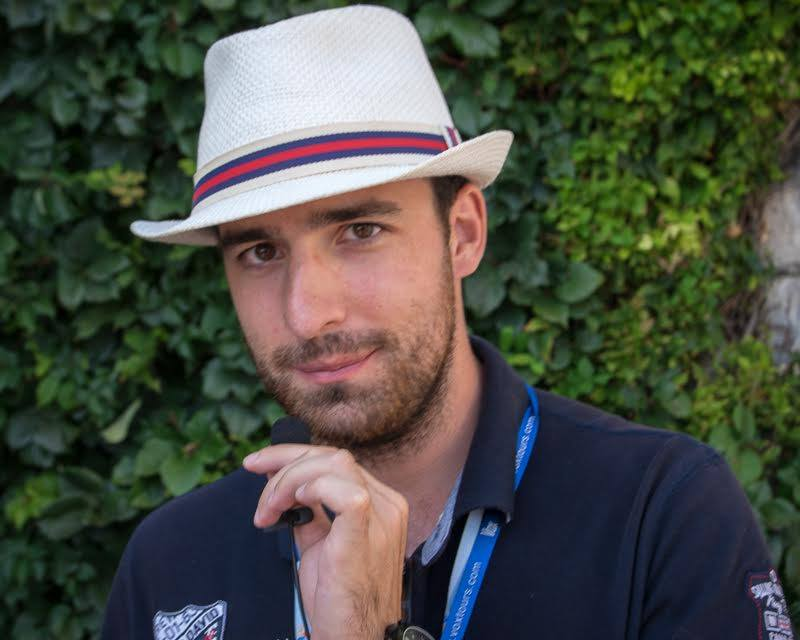
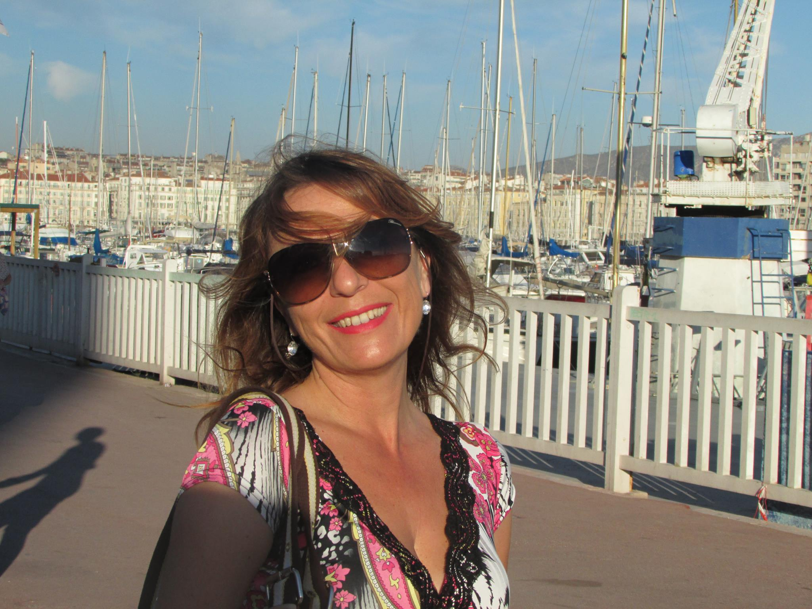
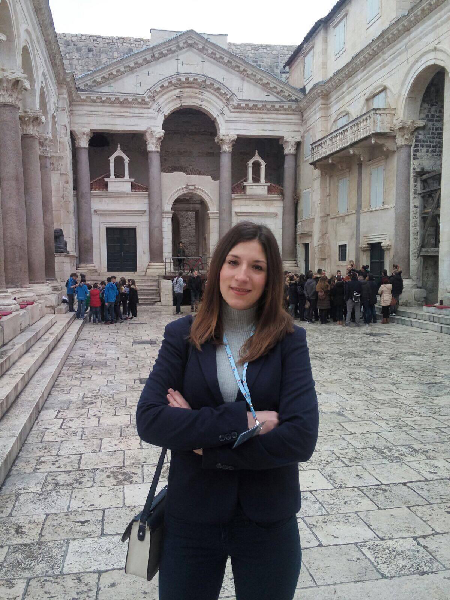
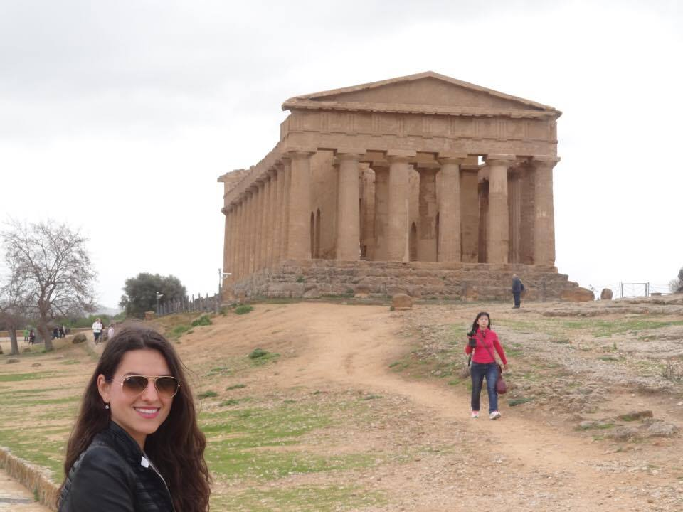

Prerequisites for any of our guides are language, character and knowledge
Other than the ability to use English fluently, our guides have a great sense of humor and outstanding character. And with the mix of their historical backgrounds (which are absolutely outstanding) they filter interesting stories from dull ones, read the audience and adapt to unforesseen events.

Motivation and self improvement
All of our guides have had over 2000 tours and they work with a lot of international companies such as Grand Circle Travel, Tauck, Road Scholar, Tasteful Croatian Journeys, Viking Cruises, Royal Caribbean, Silversea just to name a few, so their quality and the amount of experience is guaranteed.

Large and diverse network
From language professors to art historians and archaeologists, we have it all. Every guide has a strong suit, so depending on your tour you will get a guide with an according area of expertise, yet through their constant professional collaboration and since many of them are friends in their private lives, all of our guides will have sufficient knowledge in all fields. Whether you are interested in history, politics, art, culture, economy or if you just want to discover fabulous local wine or delicious local food, our guides will be able to meet any of your requests.
Our Guides

Hrvoje “Harry”
My name is a typical Croatian name; Hrvoje, but seeing as how most people have difficulties
pronouncing it, my guests have dubbed me “Harry” (sometimes Harry Potter, sometimes Prince
Harry, but most of the time it is Dirty Harry, and of course, I am certain that you will “make
my day”). I have been a tour guide since 2009 and when I first started out at the age of 18 I
was by far the youngest guide in Split. I am licensed for three regions, I have a Master’s
degree in English and German and I do tours in over 40 locations. When I am not guiding private
tours for Harry’s Tour, I work for numerous local and international companies (Tauck, Grand
Circle, Viking, Road Scholar, Silver Sea and many others). Being a tour guide is not just my
main profession, but a lifestyle. Most of my family and friends work in tourism and we share the
idea of lifelong learning. I love sharing my knowledge with my guests in an entertaining way. We
can cover all there is to know and have a lot of fun while doing so.

Ajlin
My name has a bit of an Irish flavour to it; “Eileen”, but I am as local as they get. I was born
and raised in Split and have been a tour guide for the entirety of my adult life.In addition to
guiding, I work as a high school teacher of English and German. I have lived through the
Communist era of tourism and the post-Homeland war period. I have three decades of experience
and have worked with all of the bigger companies that come to my home town. I enjoy doing
private tours and sharing stories with my guests about whatever might interest them.Whether you
would like to hear fascinating tales of life in Communist Yugoslavia, discuss the complex topic
of the Homeland war in the 90s, hear about life in Croatia today or explore ancient and medieval
history, I would be more than happy to give you insight into these topics. Croatia is a
wonderful new destination and I would be happy to show you some of its secrets.

Tina
My name is Tina and currently I am pursuing a Master’s degree in English and Italian. I obtained
my guiding license at a very young age and have been extremely satisfied with my profession ever
since. I am very fortunate to have been born just a few minutes on foot from the ancient Roman
palace in Split. Looking back at my childhood, I find it incredible that, as a child, I played
hide and seek in a palace which is 1700 hundred years old. Therein lies the beauty of Split, it
is not just a series of rocks, standing in absolute silence. No, quite the opposite, the stories
of Split echo from the timeless stone and new stories are embedded each day. How unique is it to
find a Roman palace, which is fully inhabited? I invite you to see Split through my eyes. This
is my passion, showing you the beauties of Dalmatia; and Split is just the beginning. Join me
and together we will explore all that this remarkable region has to offer.

Sandra
Hello! I am Sandra from Split, Croatia. I am a teacher of English and Italian, but also a tour
guide for Split and Šibenik region. I love dancing, singing, reading books, spending time in
nature, but most of all, I adore travelling abroad! If you are very passionate about exploring
Split and its surroundings, I think you would agree that the best way to do it would be with a
fellow traveller. I am always ready to present my home region in an interesting and interactive
way. So, if you genuinely want to learn more about Dalmatia and create lasting memories, then do
not hesitate to join me on an adventure. Experience Croatia with a professional, licensed local
guide. I like to think that Croatia is the new exotic; everybody has been to Italy and Greece,
but only a select few can boast that they have explored Croatia. Other than being a hidden gem,
the Dalmatian coast is affordable, safe and full of excitement and activities. See you very
soon!